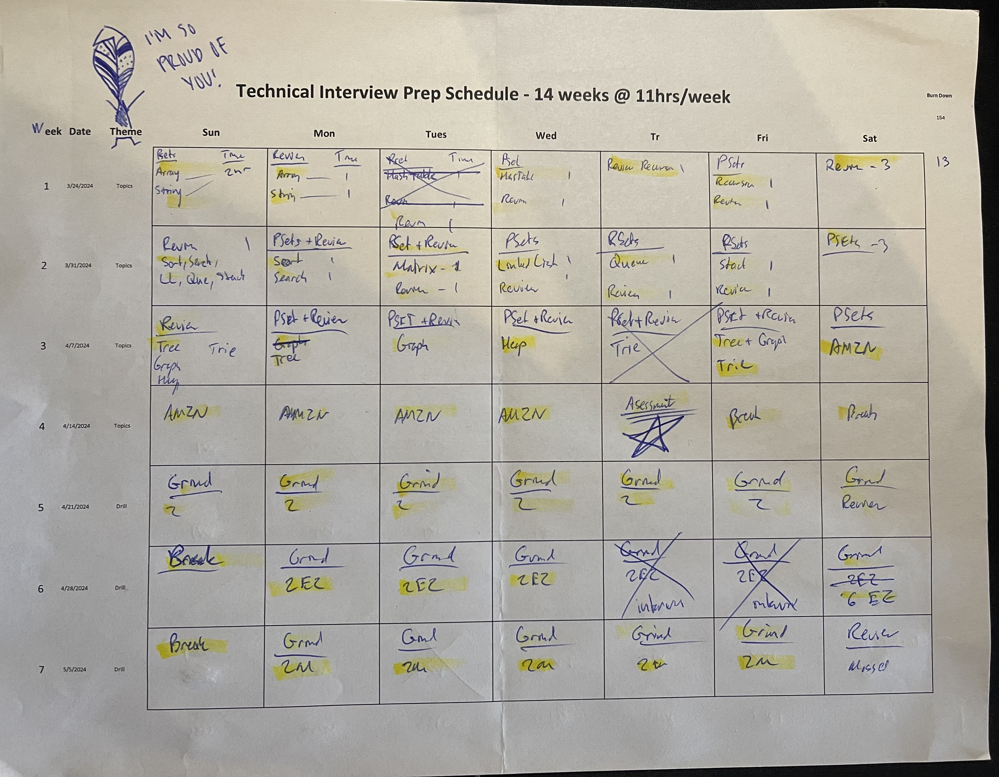
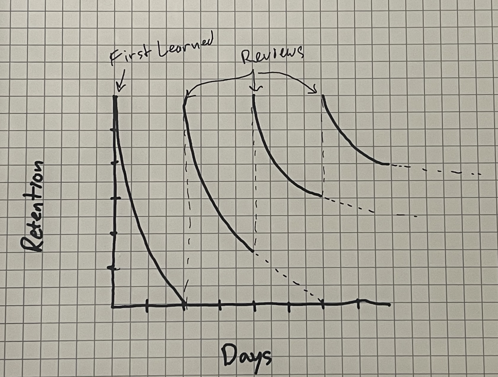

An Ultralearning Approach to the Technical Interview
Intro
In 2023 I interviewed with Amazon and Google. Both were eye opening experiences and exposed me to the rigor and extreme caution that big tech companies take with their hiring process. Their philosophy, as I’ve come to understand, is that passing on a few good candidates is better than hiring one bad egg. This poses an especially big challenge for us humble interviewees because we need to be extremely prepared, knowledgeable and level-headed come interview time. How then can we make ourselves stand out? I set out on a mission to answer just that.
How it all started
A few months ago I was researching learning strategies to more effectively pick up a new programming language. I had shown interest in Rust a few years ago but my learning quickly hit a wall and I closed the book on it early. Then one day in the not-so-distant future I came across an awesome book called “Ultralearning” by Scott Young . It outlines some strategies for learning difficult things in an intense, focused, and structured way. I highly encourage you to read the book too, but if I were to convey its ethos in two bullet points it would be:
- Plan more than you think you need to
- Learn by doing the thing you want to do directly
I had decided I wanted to “ultra learn” the Rust programming language. I made many mistakes in my first attempt. I got stuck in “tutorial hell” without a well-structure learning plan and no concise motivation for learning outside of “I should probably know a low level language”. So this time I started applying some of the ultralearning techniques, and project-ifying the learning. I spent the recommended 10% on meta-learning – doing research on how I will learn the language, how others have learned it, and collecting the books, materials and GitHub repos to aid in the learning. I then laid out a weekly plan, drilled the katas, did the coding projects and supplemented learning with a few recommended books.
However, after 4 weeks I put this project on pause again.
“But, Why?”
Well, it wasn’t because I hit the wall again.
In fact, I was seeing tremendous results! This time learning Rust and Systems Programming came much more rapidly. My only problem was that this strategy worked so well. I had this burning feeling that I could be applying this wonderful new technique to anything. Something different, better, “higher impact”. Something like, say, … Technical Interviews.
So here’s what I did.
The Ultralearning Phase
Meta-Learning
When I did interview prep last year I just blindly solved some recommended LeetCode questions, followed a few YouTube videos, read the most important chapters in Cracking the Coding Interview. I forgot them almost immediately. I had poor structure and no set schedule, and as a consequence nothing seemed to stick. The learning decay curve kicked in immediately and when the day of the interview came I found it hard to retrieve the knowledge that I had only just practiced.
This time around I dedicated way more time to planning. Ultralearning recommends 10% of total time to be spent on planning out a strategy. Having a well devised plan helps keep you on target, helps combat the learning decay curve, and acts as an accountability partner.
How I planned and organized
I was not trying to re-invent the wheel with this project. I wanted a simple concise study plan that I could adapt to my own style. I found this amazing documentation-style website called the Tech Interview Handbook and made heavy use of it throughout. I highly recommend it as part of your planning phase. Read through this front to back. Its’s not very long and has some gems of advice.
I went with its recommended approach of 3 month of learning, 11 hours per week. I factored in 2 extra weeks for … well … this is life and sh$t happens, which came out to a cool 154 hours. This meant that about 15 hours should be dedicated to meta-learning, planning, building a calendar, finding resources, paying for courses, setting up LeetCode, etc.
In the study and practice plan section there is a breakdown of each topic by week, recommended time, and priority level of each topic. I used this as a baseline to craft my weekly schedule, trying to incorporate time for spaced repetition and direct learning strategies I discovered from Ultralearning. The beginning is always a little awkward when starting these things, and I used the first few days to sus-out what worked and what didn’t. I eventually arrived on this sequence:
The Learning Sequences
- Active Learning
- Read the recommended articles and watch the recommended videos
- Over-learn the topic - articles often link to other resources so jump down that rabbit hole
- Direct Practice
- Solve 3-4 of the essential LeetCode - be sure to [[02-an-ultralearning-approach-to-the-technical-interview#1. Time yourself|time yourself]]
- Subsequently review each attempted question and understand your weaknesses
- Weekly Review
- Comprehensive review at the end of the week
- Drill and Review the recommended LeetCode
- Re-try some of the failed questions from earlier in the week
Because I work full-time, this is the schedule that I landed on after tuning the first week. Sundays were spent on “light reading”. My work week, Mon-Fri, I spent about 1-2 hours per day drilling problem sets and reviewing. Saturdays were spent on a longer comprehensive review of the weeks topics. Similar to Mon-Fri just more diverse set of problems. Here is how the schedule looked:
| Sun | Mon | Tue | Wed | Tr | Fri | Sat | |
|---|---|---|---|---|---|---|---|
| 0 | 1 | 1 | 1 | 1 | 1 | 2 |

Learning days (0s) are just there to put you in the right headspace. They are not quite as important as the other days and serve to be primers for the content to come. The problems attempted in the Direct Practice days (1) are far more important, because most of the learning will happen during your struggle when trying to complete a problem in 15-20 minutes, inevitably failing, and then reviewing what went wrong. I have come to appreciate the fact that failure is a very powerful teacher. By intentionally setting myself up for failure during the drill sessions I was able to highlight my weaknesses and force myself to go back and grok the thing.
“Failure is a very powerful teacher.”
So that was the majority of the planing phase. Initially, I left some extra time for planning during the first week to make adjustments to the schedule based on how things were going. With my calendar printed out, LeetCode purchased, books coming in the mail, I was well equipped for the next 12-14 weeks of this marathon. Now lets dive a little deeper into the learning strategy.
The Power of Directness
Wanting to pass the technical interview meant that I needed to practice doing technical interviews. All the YouTube, LeetCode, books, and courses are nothing but tools to aid in understanding the domain of knowledge, but they don’t magically make you a good technical interviewee. This comes down to directly practicing in the style of the interview – usually a blank document or a physical whiteboard. There are 3 things to consider when emulating this direct interview practice.
1. Time yourself
During each and every problem I attempted, I had a timer going. It didn’t matter if I finished solving the question or not. The simple practice of timing the problems exposed weaknesses in my problem solving strategies and highlighted the areas where I needed to focus more effort. I kept a pen and paper handy and quickly jotted down questions that came to mind while I was solving the problem, and came back to them during the subsequent review session. This ensured that I was practicing under time pressure and also had some topics to review later under more relaxed conditions.
2. Bring your own examples
LeetCode is a great platform for practicing, but it gives too much information at once. Part of the challenge in the real interview is asking your interviewer the right questions. Questions like “What does the input look like”, “the output”, “are duplicates allowed”, etc. LeetCode lays all of these out form the start. I made sure to ignore the examples and come up with my own, and only reference the examples when I was genuinely stuck. This more closely emulates a real interview.
3. Don’t run the code
First off, solve the problem before coding it out. I made the mistake last year of jumping to the intricacies of the code before actually solving the problem. In my naive initial practice I made heavy use of the “Run” button in LeetCode. Forget this button exists. Solve the problem to the best of your ability in the time given, optimize as much as you can, but don’t focus on running the code. This is not Test Driven Development and you will not have this kind of feedback during the interview.
Following these 3 strategies when drilling interview problems helped more closely simulate the true format of the interview. This is exactly how it went in 2023 and this is exactly how it is now. But all the drilling in the world was not going help if I didn’t have a good strategy for review and retention.
Retention
Learning decay is real and it sucks. Our brain is great at archiving information that we don’t access on a regular basis. I have found two strategies that work best to combat learning decay, and helped me retain information for longer periods of time:
- Over learning
- Spaced Repetition
Overlearning
Going beyond surface level on any topic is probably the most effective way to make it stick. Additionally, over-learning is less of a “trick” than other strategies. Lets compare it to mnemonics. As with mnemonic strategies you are creating associations in your brain to help you quickly recall the topic. But unlike mnemonics, over-learning fundamentally adds to your overall understanding of the subject. Instead of silly acronyms helping you remember something, you have a robust web of inter-related information to fall back on.
Let me use Hash Tables as an example for how I over-learned to help me understand the topic. Initially, I knew that you can use the Hash Table data structure to quickly access data stored as a key-value in near constant time, O(1). What I didn’t know about were all of the hashing functions and the collision resolutions mechanisms when building out a Hash Table. These are usually abstracted away in higher level languages. I read a bunch of articles on the subject (I love it when online articles links to more articles). Next thing I knew I had 12 tabs open. Even though each article covered essentially the same thing: “here’s what a Hash Table is, what it does, here’s how”, they all approached it slightly differently. Seeing the various approaches and different implementation strategies really helped contextualize the essence of the topic for me, even if I never had to recall the implementation details.
What I have found is that my brain is able to create some common patterns after consuming about 3-5 different resources on one topic. So once I have reviewed 3 different materials on the subject and can solve 3 similar problems, I feel confident enough about moving on. If I still cant solve 3 problems, there there are likely some knowledge gaps I need to fill.
The challenge with the over-learning strategy is knowing when to stop. Knowing how deeply to go down the rabbit hole. This is entirely subjective but a great segue to the next strategy: Spaced Repetition.
Spaced Repetition
We know that time is the enemy of our learning. In my first year of university I took a psychology class and one of the first things my professor pulled up on the board was the classic “forgetting curve”. We learn really quickly at first, but we forget just as quickly. Thankfully we can combat this tendency to forget with repetition. The curve becomes far less steep with subsequent reviews, and this is why I wanted to incorporate a spaced repetition strategy into my schedule. Spacing the learning and drilling 1 day apart ensures that there is ample time between learning something quickly and then reviewing aggressively to reinforce the ideas, and challenges any misconceptions you may have mistakenly formed in the initial study. Having a comprehensive drill / review session at the end of the week further solidifies this.

How its going
Timing is key
After piloting these strategies for a week, I have learned quite a bit. Firstly, the 11 hour per week time commitment feels bit too low to deeply cover all the content prescribed in the guide. When I allocate 15 minutes to solving each problem, the subsequent review can take up to 30 minutes if the problem is sufficiently complex or used some Pythonic trick that I am not familiar with. E.g. I learned that I cannot use a List as the key for a dictionary because Lists in Python are mutable. It took time for me to understand that casting Lists as Tuple makes them immutable and this can be a useful hashing mechanism for anagram problems if you are optimizing for performance and trying to avoid sorting.
Despite the early time investment, I am very hopeful that it will get easier. Early on, I tripped up on simple problems. Now I can solve these types of problems in half the time, even using the most efficient strategy! The learning curve seems to be steep initially, but once I’ve encountered each type of problem and start grokking it, my time to solve seems to drop significantly. I am hopeful this trend continues.
Distraction
It was Easter Sunday weekend. I knew the weekend would be spent with my family, but I also wanted to keep up with my studies. I planned to pepper some light reading and review in between the holiday festivities. I loaded up some Medium articles onto my Kindle. There were only about 6-8 articles on Linked Lists, Queues, Stacks, Sorting and Searching - topics I was already pretty familiar with. What I learned, however, is that distraction is the enemy of progress. What should have taken me at-most an hour or two, wound up taking sever hours due to distraction. This further highlighted the importance of having a quiet focused study space, because this kind of technical literature, even the reading" cannot be consumed while I am distracted.
Motivation
I have been following the r/leetcode subreddit and have been seeing a wide spectrum of stories of both inspiring and demoralized experiences with leetcode interview prep. There is definitely a strong learning curve with the problems but given enough time and with the right strategy it becomes like second nature and quite fun actually. After going through the initial learning phase and getting over a week of the Easy level drilling, I can confidently say I can solve most easy problems in just a few minutes. Your brain starts recognizing patterns and there are only a dozen or so different problems. I am cautiously optimistic though, because I know once I start on the Mediums, there will definitely be a new hump to overcome. But having a solid foundation is very helpful as Mediums generally just add a layer of complexity or an additional data structure on top of the easy. My advice to those frustrated, demoralized souls on reddit is this - “stick with it, lay a good foundation, and don’t burn yourself out”.
Applications and Offers
Throughout this process I have also been researching companies and applying to the ones I find to be a good fit. In total I applied to about 30 carefully researched and considered roles. I received many polite rejection letters and even a weird AI screening. Here are some of the highlights, interviews and decisions:
1. Fintech Research Company - Interview, No Offer 😵
This was my first invitation to interview. There was no Online Assessment just went straight to interview. I was your average technical grilling. As this was the first interview in a while I felt a little underprepared. It also felt like my interviewers were a bit underprepared or were not accustomed to interviews. It was a jumble of technical trivia and generic interview questions which I did my best to answer but some of the questions were so trivial I felt as if I were on a game show – less about problem solving and more about intricacies of a specific language or database.
I learned a lot from this interview, namely that I needed a refresher on some of the tech I hadn’t used in a while, especially if it shows up on the job description. Ultimately I think my lack of preparedness showed and I didn’t move on.
2. Amazon - Screened Out Again 😵
I applied to Amazon in 2022 and never made it past the coding assessment. As I was already in their system I got an invitation to go through another interview. Its almost like they saw that I ordered “Cracking the Coding Interview” and magically knew I was looking 😅.
The process was pretty standard. I emailed back the recruiter with my new resume, filled out the online application. She also asked me to answer a list of some basic screening questions. Things like openness to relocate, my current role, how much time I spend coding/designing, etc. I took the Online Assessment about a week later and the questions were fairly simple. The first one passed most test cases. The second one stumped me and only passed a few edge cases. I had the right approach just missed a minor detail - I managed to solve it later but my approach was probably not even looked at and I was screened out .
Big takeaway here is if you don’t pass the Online Assessment questions you’ll likely be screened out.
Given the current market for software engineers, I think the cold truth is that “companies can be super picky”. The applicant pool is pretty massive now after all the layoffs, and they are more liberally screening out. So being able to pass the OA is a huge foot in the door and shouldn’t be taken lightly.
3. Healthcare Company - Offer ✅
I applied early April 2024, did a short phone screen, and took another HackerRank assessment. This one was more technology specific and role oriented. They asked some very specific multiple choice questions about React, Auth flow, and some infrastructure YAML formatting. A little trivia-like, but I think they wanted to gauged if I used certain technologies or not. There was one coding problem in JavaScript related to generators which I completely forgot were a thing in JS, but a quick language ref lookup I solved it no problem. Overall a pretty straight foreword exam. Not the best way to gage the applicant overall problem solving abilities but much easier to get foot in the door than the “leetcode” style problems. Neither of these approaches is perfect in my opinion.
The following week I was invited for a panel style interview with two architects and a director. Having learned my lesson before, I spent the weekend diving into the technologies listed in the job description and going over the tech I wasn’t super familiar with. I built a small app using Next.js, TypeScript and Auth0 as a refresher. This exercise helped a ton. I think any technology listed on the JD is always fair game for questions in the interview. The weekend prep payed off and because of my prep, the interview went really well.
I sent a thank you note to the recruiter a few days later and asked for any feedback. We had a conversation the following day and I received news that I was their top candidate!
Did I accept the offer?
YES! After a few more email and some salary negotiation I was happy with the final offer and accepted it.
Key Takeaways and Summary
Well, I didn’t make it the whole 14 weeks. In fact I “only” made it to week 11 by the time I got an offer. But in the last 10 weeks I sure did learn a thing or two.
For Big Tech companies my bottleneck was the Online Assessment. I think if I had the full 14 weeks instead of just 4 of leetcode grind I would have been in much better shape to solve the Amazon questions perfectly.
For the companies that didn’t do leetcode the big mistake I made was not being prepared to answer interview questions. I learned from my mistakes during the first interview and prepared a list of examples of challenges, failures and successes across all of my projects and tied them closely to the job requirements for the new position. Better yet I built a small demo app using some of the technologies from the job description to give myself a nice refresher.
Last of all, this process takes time. 14 weeks may seem like a long time, but it sure did go by quickly. Thankfully the intensity of this period really paid off. I learned a metric ton of “tricks” and strategies for solving problems efficiently. And the awesome reward from all of those long hours after work and on weekends: the closing of one chapter and opening of an exciting new one!
So whats next?
Building new habits
Changing jobs or starting new work projects always feels like a clean slate. I always like to take this time as an opportunity to reflect on what worked in the past and what didn’t. In the next few weeks as I transition from my old job to the new, I plan to start setting some goal for myself in this next chapter.
Forever LeetCode - I get it
Having gone through a sizable chunk of the learning plan, all of the pain of getting stuck and manic joy of finally solving a problem on my own, I kinda understand the hype. Im relieved to get 3 hours back each day, but also kind of bummed I didn’t get to do more of those problems during the interview process. I definitely feel like these last 10 weeks have made me a much stronger software engineer. There is no doubt about that. Though I have a massive list of books I want to get through, I will definitely continue to solve leetcode on the regular just to keep current. Maybe even try using a language other than Python.
Ultralearning ubiquity
If I learned one thing during this whole process is that the ultralearning framework works tremendously well! Its portable and can be applied to nearly any new learning. I am extremely happy to have successfully applied it to my personal life. I feel like I have discovered a sort of cheat code to life and feel motivated to continue applying it in other practical areas and next project!
Outro
If you made this this far, thanks for taking the time and reading. If you have any questions or constructive feedback lets connect!
@himynameisoleg